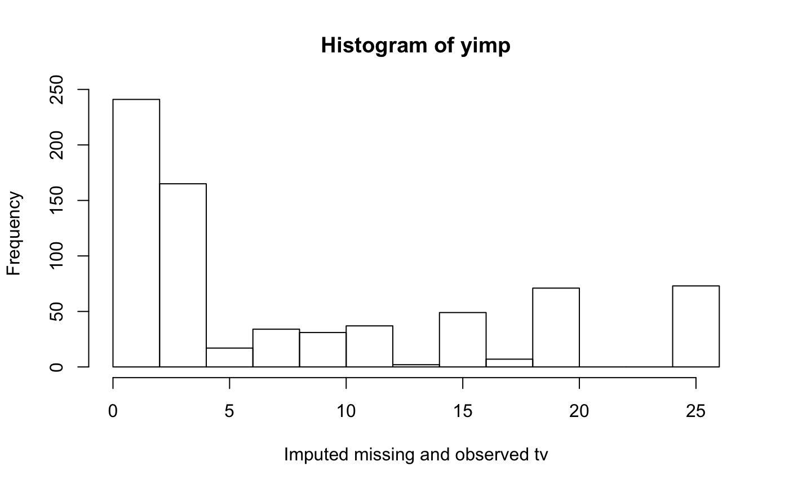

Imputation by predictive mean matching
mice.impute.pmm( y, ry, x, wy = NULL, donors = 5L, matchtype = 1L, ridge = 1e-05, use.matcher = FALSE, ... )
Arguments
| y | Vector to be imputed |
|---|---|
| ry | Logical vector of length |
| x | Numeric design matrix with |
| wy | Logical vector of length |
| donors | The size of the donor pool among which a draw is made.
The default is |
| matchtype | Type of matching distance. The default choice
( |
| ridge | The ridge penalty used in |
| use.matcher | Logical. Set |
| ... | Other named arguments. |
Value
Vector with imputed data, same type as y, and of length
sum(wy)
Details
Imputation of y by predictive mean matching, based on
van Buuren (2012, p. 73). The procedure is as follows:
Calculate the cross-product matrix \(S=X_{obs}'X_{obs}\).
Calculate \(V = (S+{diag}(S)\kappa)^{-1}\), with some small ridge parameter \(\kappa\).
Calculate regression weights \(\hat\beta = VX_{obs}'y_{obs}.\)
Draw \(q\) independent \(N(0,1)\) variates in vector \(\dot z_1\).
Calculate \(V^{1/2}\) by Cholesky decomposition.
Calculate \(\dot\beta = \hat\beta + \dot\sigma\dot z_1 V^{1/2}\).
Calculate \(\dot\eta(i,j)=|X_{{obs},[i]|}\hat\beta-X_{{mis},[j]}\dot\beta\) with \(i=1,\dots,n_1\) and \(j=1,\dots,n_0\).
Construct \(n_0\) sets \(Z_j\), each containing \(d\) candidate donors, from Y_obs such that \(\sum_d\dot\eta(i,j)\) is minimum for all \(j=1,\dots,n_0\). Break ties randomly.
Draw one donor \(i_j\) from \(Z_j\) randomly for \(j=1,\dots,n_0\).
Calculate imputations \(\dot y_j = y_{i_j}\) for \(j=1,\dots,n_0\).
The name predictive mean matching was proposed by Little (1988).
References
Little, R.J.A. (1988), Missing data adjustments in large surveys (with discussion), Journal of Business Economics and Statistics, 6, 287--301.
Morris TP, White IR, Royston P (2015). Tuning multiple imputation by predictive mean matching and local residual draws. BMC Med Res Methodol. ;14:75.
Van Buuren, S. (2018). Flexible Imputation of Missing Data. Second Edition. Chapman & Hall/CRC. Boca Raton, FL.
Van Buuren, S., Groothuis-Oudshoorn, K. (2011). mice: Multivariate
Imputation by Chained Equations in R. Journal of Statistical
Software, 45(3), 1-67. https://www.jstatsoft.org/v45/i03/
See also
Other univariate imputation functions:
mice.impute.cart(),
mice.impute.lasso.logreg(),
mice.impute.lasso.norm(),
mice.impute.lasso.select.logreg(),
mice.impute.lasso.select.norm(),
mice.impute.lda(),
mice.impute.logreg.boot(),
mice.impute.logreg(),
mice.impute.mean(),
mice.impute.midastouch(),
mice.impute.mnar.logreg(),
mice.impute.norm.boot(),
mice.impute.norm.nob(),
mice.impute.norm.predict(),
mice.impute.norm(),
mice.impute.polr(),
mice.impute.polyreg(),
mice.impute.quadratic(),
mice.impute.rf(),
mice.impute.ri()
Author
Stef van Buuren, Karin Groothuis-Oudshoorn
Examples
# We normally call mice.impute.pmm() from within mice() # But we may call it directly as follows (not recommended) set.seed(53177) xname <- c("age", "hgt", "wgt") r <- stats::complete.cases(boys[, xname]) x <- boys[r, xname] y <- boys[r, "tv"] ry <- !is.na(y) table(ry) #> ry #> FALSE TRUE #> 503 224 # percentage of missing data in tv sum(!ry) / length(ry) #> [1] 0.6918845 # Impute missing tv data yimp <- mice.impute.pmm(y, ry, x) length(yimp) #> [1] 503 hist(yimp, xlab = "Imputed missing tv") # Impute all tv data yimp <- mice.impute.pmm(y, ry, x, wy = rep(TRUE, length(y))) length(yimp) #> [1] 727 hist(yimp, xlab = "Imputed missing and observed tv")  plot(jitter(y), jitter(yimp), main = "Predictive mean matching on age, height and weight", xlab = "Observed tv (n = 224)", ylab = "Imputed tv (n = 224)" ) abline(0, 1)cor(y, yimp, use = "pair") #> [1] 0.7415001